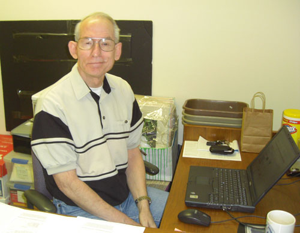

Volunteer Your Time
It is Volunteers that Make a Difference
Your opportunity is waiting to bless and to be blessed...

Each volunteer -- with their unique personality and diverse skills contributes not only their own gifts -- but expands and enriches our programs and each participant -- with each act of service.
For more information, contact Linda by email or phone 425-885-1006 ext. 118. View Application form.
Current Opportunities Include:
Mobility Center
We need volunteers to clean and work on equipment, and to help with our phones, emails and administrative tasks. Our greatest need is skilled electronics repair.
Sunday Evening Celebrations
We need table hosts, singers/entertainers, sign language interpreters, photographers, set-up/clean-up, and people to meet & greet Access vans. Come one time or once a month.
Special Events - Marketing/Fundraising
Assist us with the Annual Auction.
Administration
Assist with word processing, filing, making phone calls, or special projects.
Over 500 Volunteers contribute over 10,000 hours per year!